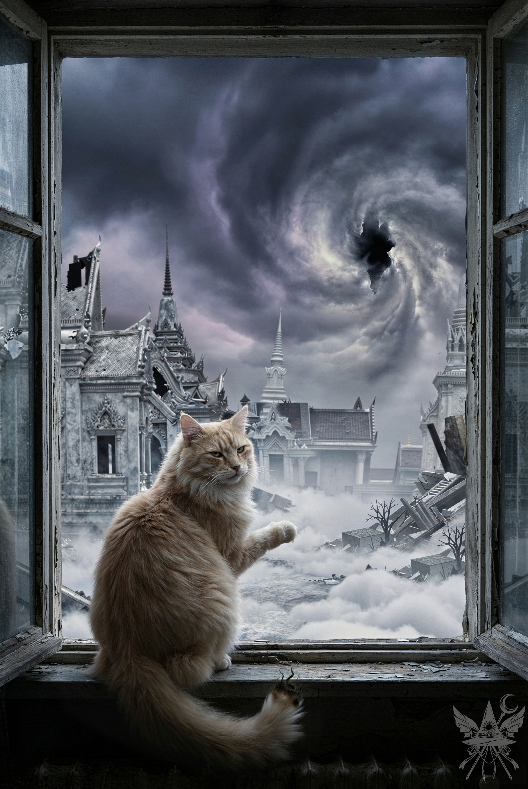

サーバー室の冷え切った空気とファンが立てる重低音の中で、張り詰めた沈黙を破るように口を開く。
「（嘘）カナ、ここまで来られたのは、ひとえにソクラテスのおかげよ。彼がいなければ、私たちはこの場所にすら辿り着けなかった。これからも彼なしでは無理だわ。だから、カナにも協力してほしいの。信用できないのは分かっているけれど……今は彼に従うべきだと思う。考え直して」
（私もカナも、お互いの嘘を見抜ける。だからこそ、本心とは違う言葉を紡げば、それは二人だけの暗号になる。カナは、私がこんな三文芝居を打つとは思っていないはず。試す価値はある。嘘だと気づいた上で、どう反応する？ ソクラテスの「新評議会の最高裁判官」なんて馬鹿げた計画に賛同する気はないけれど、今彼を敵に回すのは危険すぎる。利用できるうちは利用させてもらう。
それにしても、今のカナはまるで別人だ。地獄でコンガラを操り、別の現実で私さえも殺したあの冷酷なポルターガイストはどこへ消えたのか。正義、永遠の意識、人類の記憶の解放……大層な御託を並べる今の彼女は、行き当たりばったりな性格こそ変わらないものの、根底にある何かが決定的に変質している。まるで何者かにすり替えられたかのように。この揺さぶりで、彼女の真意を探り出さなければ）
男の姿をしたカナは一瞬だけ不快そうに顔をしかめたが、すぐにいつもの人を食ったような笑みを浮かべた。
「（嘘）なるほどね。メデアがそこまで言うなら、私も賛成よ。ソクラテス、さっきは悪かったわ。少し言い過ぎたみたい。やっぱり、あなたの言う通りかもしれないわね。システムを壊すのは危険すぎるもの。勝った時は、私にも良い役職をお願いね？」
肩の上のソクラテスが、満足げに喉を鳴らす。
「カナはいい子にしていればいいんだニャ。俺は化け物じゃないニャ。誰にだって改心のチャンスはあるニャ」
（カナは完璧に私の嘘を見抜き、システムへの忠誠という極上の嘘で応えてみせた。間違いない、彼女は本物のカナだ。ソクラテスがこの茶番を信じてくれれば御の字だけれど……今は便利でも、猛毒を抱き抱えているようなもの。うっかり喉笛を噛み千切られないよう、細心の注意を払わなければ）
サーバー室を出る直前、端末を操作して窓付きとエレンの情報をデータベースから完全に消去した。もし窓付きが閻魔の手に落ちれば、拷問の末に計画を吐かされる危険がある。エレンに至っては、カナの巻き添えを食っただけだ。
痕跡を消し終えると、部屋の隅で縮こまっている小さな背中に声をかける。
「窓付き、もうあの書類に判子を押してもらう必要はないわ。閻魔たちはあなたを騙しているの。一緒に来て」
（馬鹿げた裁判など無視して、そのまま天国へ送り届ければいい。この騒ぎに乗じれば、通行証の有無など誰も気に留めないはずだ）
帰り道は、行きと同じルートを辿った。ソクラテスの正確なナビゲートにより、迷うことなく換気口へと潜り込む。窓付きも無言で後に続き、暗く狭いダクトの中を這い進む。ソクラテスが先を急ぐため、カナと二人きりで言葉を交わすわずかな隙が生まれた。
男の姿のカナが、微かな声で囁く。
「メデア、うまくやったじゃない。疑って悪かったわ」
「私はずっとカナの味方よ。もうあんなこと聞かないで」
薄暗闇の中で、男の唇が弧を描く。
「分かってる。さあ、あの猫を思う存分利用してやりましょう」
「でも、ソクラテスは信じたと思う？」
「私が言ったことは信じてないでしょうね。でも、メデアの言葉は信じている。あいつからすれば、私は『ここぞという時に攻撃するために、わざと隙を見せた』だけ。だから、私がいつ牙を剥くか警戒しているはずよ。あいつは周りの存在を皆馬鹿で、操りやすいと思っている。尊敬しているのはエレンくらいでしょうね」
換気口を抜け、階段の下の暗がりに身を潜める。二人の職員の足音が頭上を通り過ぎていくのを待ちながら、カナは偽造した贈与契約書を握り締め、別館へと向かった。ソクラテスは提出先の部署までのルートと、発覚のリスクについて執拗なまでに念を押していた。
十分が経過しても、カナは戻ってこない。焦燥感が胸を苛むが、ここで立ち止まっているわけにはいかない。
（待っている間に、ソクラテスから情報を引き出しておこう）
「ねえ、ソクラテス。このデータベースには、閻魔が管理する世界のあらゆる存在が登録されているの？」
「存在っていうか……何て言えばいいんだろうニャ。人格、みたいなものニャ」
「人格？」
「いや、それも少し違うニャ。動物や植物は登録されていないし、そもそも必要ないニャ」
「じゃあ、動物には人格がないってこと？」
「どんなに賢そうに見える犬や猫でも、プログラム通りに動いているだけニャ。君たちが考えているような魂はないニャ。生態系を維持するための、いわば生体ロボットみたいなものニャ。猫の姿でこんなことを言うのも皮肉な話だがニャ」
「正体を知っているから、別に驚かないわ。前に処理衛星の話をしていたけれど、あれは何をするものなの？」
「つまらない話ニャ。彼岸の周囲の多次元空間に十二基の人工衛星が浮かんでいてニャ。人間が生まれる時、アストラル体があそこに送られて、『面白い動画』を見せられるニャ。それを見た人間は前世の記憶を消したくなって、新しい人生を始めたくなるニャ。つまり、転生ってのは、自分で自分の記憶を消しているようなものニャ」
（『面白い動画』？ 悪趣味な洗脳装置ね……。ちゆりのことも確認しておかなければ。別世界からの来訪者である彼女も、データベースに組み込まれている可能性がある）
「そういえば、閻魔が支配する星って、地球以外にもあるの？」
「そりゃあ、たくさんあるニャ。天の川銀河は二十五のセクターに分割されていて、それぞれに彼岸みたいな管理システムがあるニャ。……ところで、メデア。カナはまた何か企んでいる気がするニャ。あいつは何もかもぶっ壊したいだけニャ。隙あらば裏切るだろうニャ。まあ、能力は便利だから、使えるうちは利用するがニャ」
（図星ね、猫さん。……でも、カナは遅すぎる。まさか、ソクラテスが意図的に危険なルートを教えた……？）
痺れを切らし、慎重に階段を上って廊下を窺う。数メートル先の事務室のドアの前で、見覚えのある男の後ろ姿が深く頭を下げていた。
「……だから、さっきも言った通り、この書類は有頂天市でもらったんです。日付も番号もなくて……ええ、ありがとうございました」
もう一度丁寧にお辞儀をしてドアを閉めると、男はこちらに向かって大げさに手を振ってみせた。
（どうやら上手く潜り込めたようね）
階段の踊り場まで下がり、ソクラテスと窓付きを呼ぶ。
「もう、この男の姿にはうんざり！ 息苦しいったらありゃしない」
階段を駆け下りてきたカナは、忌々しげに吐き捨てた。
「仕方ないわ。どんな役でもこなせるようになりたかったんじゃないの？」
「まあね。とにかく、書類は受け取ってもらえたわ。番号の確認も問題なし。でも、龍神本人が立ち会う必要があるかどうかは、あの部署じゃわからないみたい。登録済みのコピーはもらえたけれど」
肩の上のソクラテスが、鋭く爪を立てる。
「急ぐんだニャ。諜報部がすぐに戻ってくる。捕まる前に有頂天市へ戻らないと駄目ニャ」
ソクラテスの的確な誘導により、死神の目を掻い潜りながら驚くほどスムーズに兵舎まで戻ることができた。地下へ潜り、レーザーセンサーの扉を突破して、有頂天市へと続く長い階段を上り始める。
「誰だ？」
不意に、階段の上から死神の低い声が降ってきた。
カナは躊躇うことなく階段を駆け上がる。
「味方だ。先に行け」
そう応じながら、カナは上からこちらに向かって大きく手を振り、下に隠れるよう合図を送ってきた。
「大丈夫だ。もう近くまで来てる。先に行け。俺は後から行く」
再び響いた声に対し、咄嗟の判断を迫られる。踵を返し、窓付きの手を引いて十メートルほど先の暗がりへと身を滑り込ませた。入り組んだ下水道の構造が、絶好の死角を作り出している。
別の死神の足音が通り過ぎるのを待ち、ようやく階段を上りきった。しかし、カナの姿はどこにもない。
ソクラテスは背後に隠れるように縮こまる小さな影を横目で見下ろし、忌々しげに顔をしかめた。
「どうしてその子を連れてきたニャ？」
「役に立つかもしれないからよ」
（適当な言い訳だ。正直なところ、この子が何の役に立つのか私にも見当がつかない。ただ、閻魔の手に落ちるのを見過ごすわけにもいかなかった。今はこれが一番無難な返答だろう）
「馬鹿だニャ。この子のせいで龍宮へ向かう足が遅れるニャ。仕方がない、ルイズの隠れ家に置いていくしかないニャ」
重苦しい雷鳴が東の空を引き裂き、窓付きがびくっと肩を揺らしてメデアの手を強く握りしめてきた。鉛色の雨雲が急速に天界の空を覆い尽くし、冷たい雨粒が降り始める。
（よりによって、こんな時にカナとはぐれるなんて）
一刻も早くカナと合流しなければならない。ソクラテスの案内に従い、小雨の中を街の中心部へと急いだ。幸い、ずぶ濡れになる前に広場へと辿り着いたが、先ほどまで暴動を起こしていた天使たちの姿はすでに幻のように消え去っていた。
「舌打ちが出るニャ。一足遅かったニャ。シューニャはもう逃げた後だニャ」
ソクラテスが喉の奥で不機嫌な音を鳴らす。
「それで、次の作戦はどうするの？」
「昨日仕掛けた罠をそのまま使うニャ。天子の小娘は完全に正気を失って、俺を悪の権化たる魔羅[1]魔羅《まら》：仏教における悪魔。悟りを妨げる存在。だと思い込んでいるニャ。だが、俺は何もしていないニャ。あの子の心の底で燻っていた野心に、ほんの少し火をつけただけだニャ」
ソクラテスは雨宿りの軒下で身震いし、毛皮の水を払いながら冷笑した。
「権力への渇望、本物の天人として認められたいという焦り……分かるかニャ？ 天子はコネで仏の座に収まったようなものだから、他の仏たちからは陰で蔑まれてきたニャ。生まれついての異常なプライドの高さと、周囲との確執。それにあの短気な性格だニャ。積もり積もった不満が、とうとう爆発したってわけだニャ」
「それが私たちの計画とどう繋がるの？」
「龍神にとって、天子が本物の仏かどうかなど些末な問題だニャ。重要なのは、仏教会が閻魔と裏で結託しているという事実だニャ。だから、シューニャの正体を龍神に密告すれば、仏教会が龍神を出し抜こうと企んでいると思い込むはずだニャ。そこに、君とカナが仕込んだ偽の贈与契約書が加われば……龍神が激怒するのは火を見るより明らかニャ」
ふと、ソクラテスが耳をピンと立て、薄暗い路地の奥へと視線を巡らせた。
「死神が五人、こっちに向かってきているニャ。会話を盗み聞きしたいところだが、さすがに目立つニャ。そのガキはルイズの事務所に置いてこいニャ。俺は後で合流するから、さっさと龍神島へ向かう準備をするんだニャ」
ソクラテスの言葉に従い、窓付きの手を引いてルイズの隠れ家へと急ぐ。地下へと続くじめじめとした階段を下りると、ジャンクフードの油と古い埃が入り混じった、あの退廃的な匂いが鼻をついた。重い扉を押し開ける。
「待ってたわよ。どこをほっつき歩いていたの？」
薄暗いリビングのソファから、いつものメイド姿のカナが呆れたような声をかけてきた。
「それはこちらの台詞よ。あなたこそ、どこで何をしていたの？」
「死神たちの会話を盗み聞きしていたのよ。メデアがここに戻ってくるのは時間の問題だと分かっていたからね」
カナは悪びれる様子もなくウィンクを投げ、隣に座るよう手招きした。窓付きは低いテーブルの隅にある座布団へ、身を縮めるようにして座り込む。
「それで、あの薄汚い猫はどうしたの？」
「おそらく、彼も死神たちの動向を探っているはずよ」
「この部屋に盗聴器を仕掛けていないといいけれど」
カナは不意に立ち上がると、油断なく部屋の隅々を見渡し、鉄格子のついた小窓の外を確認した。念を入れるように廊下へ向けて数発の弾幕を放ち、扉をしっかりと閉めてから再びソファへと戻ってくる。
「龍神は龍宮に帰還したらしいわ。この嵐が過ぎたら、すぐに龍神島へ向かいましょう。雷の直撃なんて御免だわ」
「ちょっと待って。前から気になっていたのだけれど……どうして急に、みんなを救おうなんて大層なことを言い出したの？ 以前のカナなら、こんな世界の住人がどうなろうと知ったことではなかったはず。まるで別人のようよ」
カナは皮肉めいた、それでいてどこか孤独の影を落とした微笑を浮かべた。
「そうね。メデアはまだ、私のことを半分も理解していないみたい。ええ、私という存在を完全に理解することなんて誰にもできないわ。あなたがパンデモニウムにいた時、どんな夢を見せられたか覚えている？ 孤独で、見捨てられて、必死に愛を求めていた……あれも間違いなく私の一部よ」
カナは目を伏せ、自嘲するように言葉を紡ぐ。
「この世界から腐りきった連中を一掃してやりたいという破壊衝動も、もちろん本物。それもまた、私自身なの。……そして、もう一つ真実を教えてあげる。最近になって気づいたのよ。人間がただ愚かなだけなんじゃない。この世界のシステムそのものが歪んでいるのだと。その理由は……前に話した通りよ。私がどうやってその真実に辿り着いたのか……聞きたいかしら？」
メデアは黙って頷いた。窓付きも膝を抱えたまま、静かに彼女の言葉に耳を澄ませている。カナの心の奥底に沈澱していた途方もない虚無と、彼女を決定的に変質させた何か。その全貌を、ようやく理解することができた。
「……それで、屋根裏部屋に戻って、どうやってこの盤面をひっくり返してやろうか考えていたの。その時、メデアが階段を上がってくる足音が聞こえたわ」
「そうだったのね。もう何も聞かないわ。……話してくれてありがとう」
（神に選ばれ、世界の真実を知った。それが事実だとしても、彼女が抱える危うさは何も変わらない。けれど、少なくとも今の彼女の目的は、私と同じ方向を向いている）
その時、ずっと口を閉ざしていた窓付きが、掠れるような細い声で口を開いた。
「テオドラさんと……カナ……閻魔たちを……みんな、殺しちゃうの……？」
カナは冷たく即答した。
「そうよ。あいつらは、それだけのことをしてきたのだから。二度と生き返らないように、完全に消し去ってやるわ」
「でも……閻魔たちは……ただ、命令を聞いていただけかも、しれないの……。本当は、悪い人じゃないかも……」
「悪い人間かどうかなど、どうでもいいことよ。あいつらが転生システムという名の洗脳装置で、無数の魂から記憶を奪い続けているのは紛れもない事実なのだから。どうして、あんたはそんなに閻魔どもを庇おうとするの？」
「庇ってる、わけじゃないの……。ただ……閻魔たちの後ろに……もっと怖い人が、いるんじゃないかなって……。閻魔たちも……誰かに操られているだけかも、しれない……」
カナは少し驚いたように目を見開いた。
「……確かに、その発想はなかったわ。窓付き、あんたなかなか鋭いじゃない。今の状況にぴったりな推測ね。……まあいいわ。とにかく、まずは目の前にいる閻魔どもを片付ける。システムが崩壊したら、アンドロメダ銀河の理を参考に、新しい世界を一から作り直すのよ。生き残った閻魔どもには、私たちのルールに従うか、永遠に消え去るかを選ばせてやるわ。
ほら、外の嵐もそろそろ収まりそうよ。腹ごしらえをしてから、龍神島へ乗り込みましょう」
カナは食料庫を漁り、干し肉や水で戻しただけの味気ない乾パン、出がらしのお茶などを無造作にテーブルへ並べた。窓付きは隅に座ったまま一切手をつけようとしなかったが、カナはメデアと競うような勢いで食料を胃袋へと流し込んでいく。
（ポルターガイストでありながら、どうしてそこまで食べ物を欲するのか。……カナという存在は、知れば知るほど謎が深まるばかりだ）
粗末な食事を腹に詰め込みながら、ソクラテスが提案した龍神への報告計画――シューニャの正体を明かすという筋書き――をカナに説明した。カナは少し考え込む素振りを見せ、やがて口を開く。
「随分と大胆な作戦ね。でも、あの小賢しい猫がそこまで自信満々に言うのなら、意外と上手く転がるかもしれないわ。……そういえば、贈与契約書の写し、彼岸花の印鑑付きでしっかりと受け取ってきたのだけれど、龍神に見せつけた方がいいかしら？」
意味深な言葉を投げかけた直後、カナは急に押し黙り、扉の方へと耳を澄ませた。
「どうやら、猫ちゃんがお戻りみたいね」
カナが扉をわずかに開けると、ソクラテスが隙間から滑り込んできた。
「何だ？ 俺があくせく働いているってのに、のんびり飯を食っているのかニャ？ 閻魔どもの通信を拾ったところによると、夢幻世界と天界の境界に、とんでもなく巨大な穴が開いたらしいニャ。しかも、その亀裂はどんどん広がっているらしいニャ。……外を見てみるんだニャ」

ソクラテスは塗装の剥げた窓枠へ身軽に飛び乗ると、右前足を上げて窓の外の惨状を指し示した。
窓の隙間から、肌を刺すような冷気と、世界の境界が削り取られるような不気味な風の音が吹き込んでくる。視線の先では、かつて純白を誇っていた有頂天市の仏塔が崩れ落ち、瓦礫となって雲海へと沈んでいく終末的な光景が広がっていた。空の彼方には暗黒の宇宙空間に続くような巨大な亀裂が走り、そこから漏れ出す赤紫色の毒々しい光が、聖なる雲海を禍々しく染め上げている。
崩壊しゆく世界を背に、ソクラテスは超然としたガイドのように言葉を続けた。
「これが誰の仕業か、もう分かっているはずだニャ。龍神は龍宮に帰還しているニャ。さっさと黒幕の正体を教えに行くんだニャ。月の姉妹に見つからないよう、僧衣で身を隠し、直ちに龍神島へ飛ぶニャ」
カナはメデアの目をじっと見据え、完璧な従順さを装った微笑みを浮かべた。
「（嘘）ええ、賛成よ。素晴らしい名案ね。私がソクラテスを背中に乗せて、飛んでいってあげるわ」